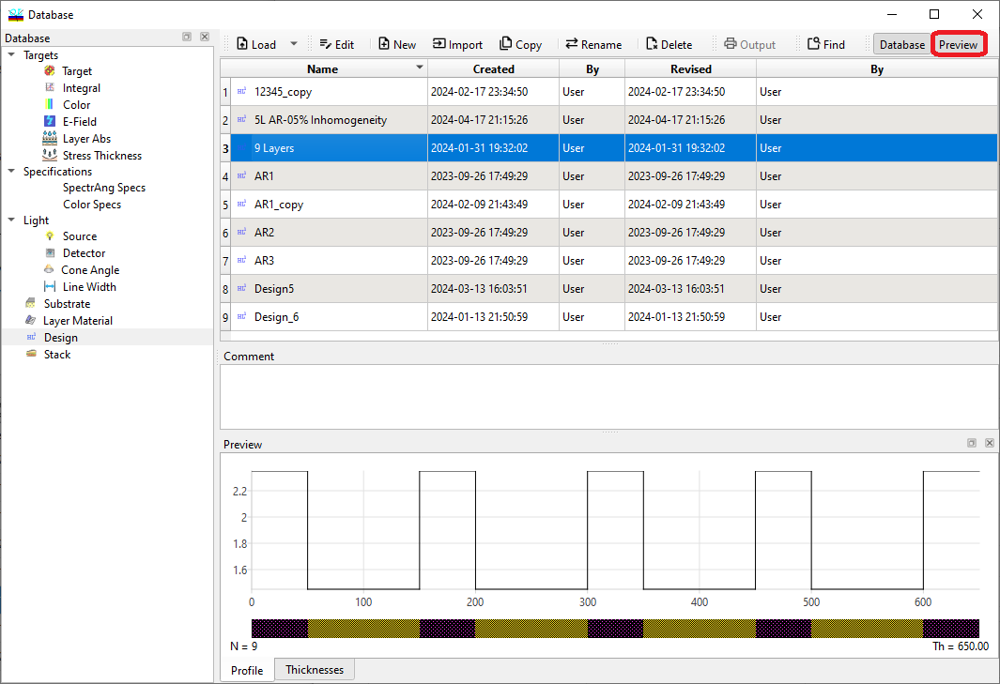
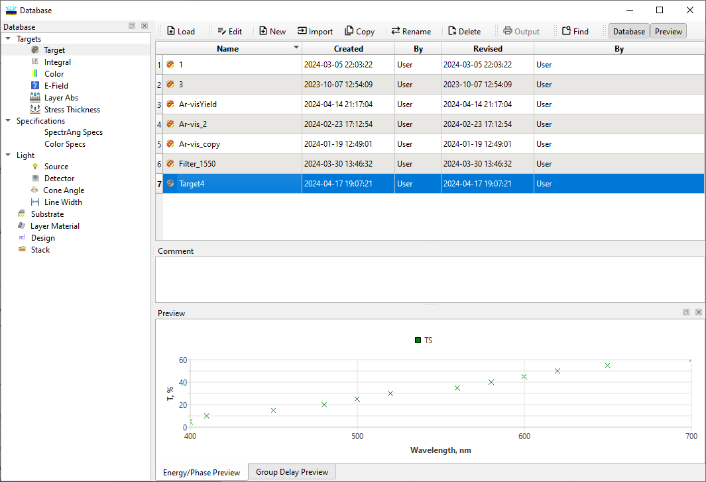

Database Access Dialog
Database Access Window
Navigation: OptiLayer Menu Commands > Data Menu >
Database Access Window
` <idh_menu_data.html>`__ ` <idh_menu_data.html>`__ ` <idh_loading_data.html>`__
The unified database access window in OptiLayer offers a streamlined and efficient way to access various types of data critical for optical coating design and analysis. This approach provides a cohesive user experience by allowing you to easily switch between different data types necessary for your project without the need to navigate through separate interfaces or menus for each data type. Here’s a breakdown of how it works and the types of data you can manage through this unified access window:
Types of Data Accessible Within the unified database access window, you can select and manage the following types of data:
Target: Specifications for the desired optical performance of your coating.
Integral Target: Aggregate performance targets over a specified range or conditions.
Color Target: Specifications for the colorimetric properties or goals for the coating.
Light Source: Characteristics of the light source used in performance simulations or analysis.
Detector: Details about the detector used to measure the coating’s performance.
Cone Angle: Information regarding the angular distribution of light for the analysis.
Substrate: Specifications and properties of the substrate material onto which coatings are applied.
Layer Material: Properties of the materials available or used for coating layers.
Design: Specific configurations and layer structures designed to meet the target specifications.
Stack: Defined sequences of materials or design prototypes archived or under consideration.
Navigating the Database The unified database access window features a tab for each data type listed above, located at the bottom of the window. This design allows you to:
Open the Access Window: Initially, you’ll open the window with a specific type of data in mind, but you’re not limited to viewing or manipulating only that data type.
Switch Between Data Types: Simply click on the appropriate tab at the bottom of the window to switch to a different type of data. This capability ensures you can efficiently manage all aspects of your coating design without multiple open windows or redundant navigation steps.
Incremental Search Functionality: Quickly find the file you need by starting to type the first few letters of its name in the search bar. The database will incrementally filter the list of files to match your input, making it easier to locate specific files among potentially large datasets.

In version 14.57, we introduced the instant preview function. This feature allows any database file to be visualized in a small Preview window, significantly simplifying the work with large databases.

The Preview sub-window can be detached from the database window and positioned arbitrarily on the screen. It can also be docked on other sides of the database window. For this purpose, use the drag-and-drop operation with the Preview window’s caption. Actions on database files are performed using the menu bar at the top of the window. The buttons on the menu bar execute commands that allow you to Load a file, Edit an existing file, create a New file, make a Copy of a file, Rename a file, Delete a file, create a text Output of the file contents, and Sort the files in the database in different ways. The Load, Edit, Copy, Rename, Delete, and Output commands are applied to a selected file. A file is selected by clicking on it or by scrolling with the arrow keys.
Load / This command loads a selected file from the disk into the computer memory. For further details, see “/ Loading Data Files./ “ In some situations (Substrate, Incident Medium, Exit Medium, for example), the same file can be utilized in different ways. Note the small arrow to the right of the Load button; it invokes a special popup menu providing access to additional options. These options are also accessible through the right-click menu of the Database window.
Edit / This command can be used to modify a selected file. For more detail, refer to:
Editing Stack/ Important Notes / Editing a file in a database does not affect the contents of the file currently residing in memory; it affects only the contents of the file stored on the disk. To change the memory contents, use the Load command. Design, Stack, and Target files may be edited in memory by using the Modify Design, Modify Stack, Modify Color Target, Modify Integral Target, and Modify Target commands in the / / / / / / / / Synthesis menu/ / / / / / / / .
New / This command allows you to create a new file. When this command is selected, you are prompted for a new filename and an optional comment (see “/ Creating a New Database File/ “). Then, you automatically enter Edit mode to modify the contents of the new file. Some data fields are already filled with default values; these should be changed to suit your problem. Warning: The maximum number of files in each database is 799.
Copy / This command allows you to copy a file. This is useful if it is appropriate to modify an existing file to suit a new purpose. After selecting this command, you will be asked to confirm the copy process or to cancel it. Upon confirmation, you will be prompted to enter a new filename and comments, the same way as for the New command. Warning: The maximum number of files in each database is 799.
Rename / This command allows you to rename a selected file. When this command is selected, a dialog box titled “Rename to” will open with the name of the selected file highlighted, and a second field for the comment associated with the file is also displayed. After changing either of these fields and clicking the OK button, the database will be updated to reflect the new name and/or comment.
Delete / This command allows you to delete any file in a database. You will be prompted as to whether you really want to delete a selected file. Upon confirming the deletion, the file will be removed from the database. Warning: Deleting a file permanently erases its contents; once deleted, it cannot be recovered.
Output / The output command enables the creation of a text report on the contents of a selected file (see “/ Creating Text Output/ “). You can save this report as an ASCII file (using the Save Output As command) or send it directly to the printer (using the Print command) from the / File Menu/ .
Sort / This command allows the sorting of filenames in a database in different ways. Files can be sorted by the alphabetical order of their names, the names of their creators, by the creation or revision dates. Any sorted category may be arranged in reverse order. For details, see “/ Setting Sorting Options./ “
Find / Opens an additional search tool. You can specify a name pattern to search for the required file in large databases.
Quit / This command closes the database window